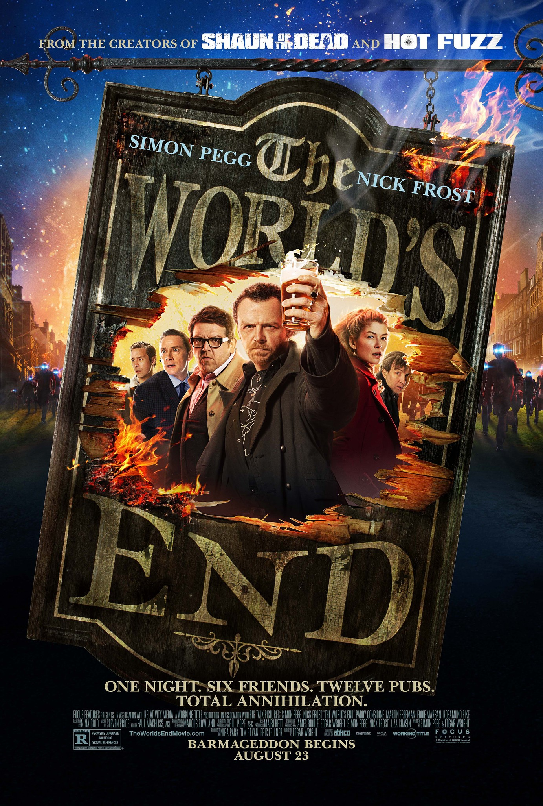

The Worlds End

Review
Travis Steele 4/26/2026
The World's End This movie was the greatest in the trilogy I was not sure what it was going to be about in the begining and I did not expect this to turn into an alien takeover movie I loved how coordinated all of the background actors were.
My favorite character from this movie has to be Andy Knightly played by Nick Frost he played the role so well as the pissed off guy that says screw it halfway through the movie. The best scene is the big bar fight where he is dual weilding bar stools.
On the last note this turned out to be one of my favorite movies of all time.
Trivia
- The World's End is technically a movie about a man so determined to finish a pub crawl that he accidentally saves humanity, which is the most British plot ever conceived.
- Nick Frost trained in martial arts for the film specifically so he could do the epic pub brawl scenes. He reportedly enjoyed it so much he kept going after filming wrapped.
- The five pubs the gang visits all have names that foreshadow what happens in them — Edgar Wright and Simon Pegg hid the entire plot in the pub names and most people don't notice until a second viewing.
- Simon Pegg had to actually get in shape to play Gary King, who is supposed to be a washed-up loser. He found it deeply ironic that his most physically fit performance was for his least physically fit character.